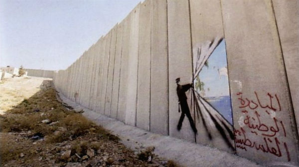

Blind Obedience
“The greatest crimes in the world are not committed by people breaking the rules but by people following the rules. It's people who follow orders that drop bombs and massacre villages.” ― Banksy, Wall and Piece

Palestinian Wall
"People say graffiti is ugly, irresponsible and childish... but that's only if it's done properly.” ― Banksy, Wall and Piece
Diogenes Laërtius
"One original thought is worth a thousand mindless quotings."
―
Banksy, Wall and Piece